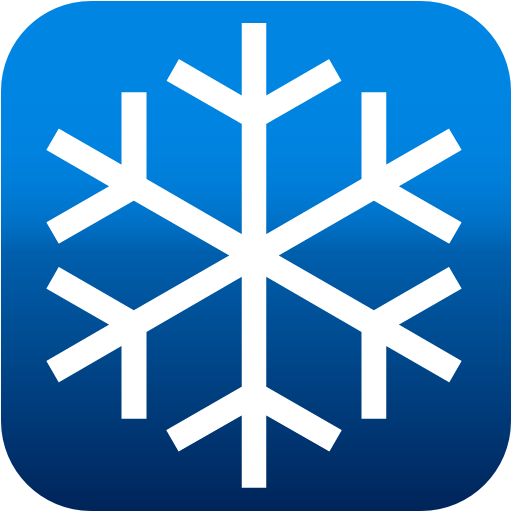
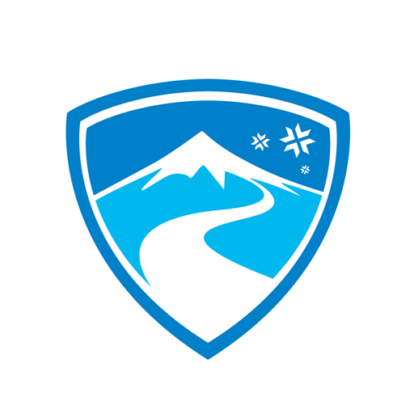

Recommended Apps
Skiif
Skiif is a free, community GPS dedicated to skiing and snowboarding, providing a digital and interactive piste map for 40 ski resorts in Europe (including the 3 Valles!). The app tracks your location to show you exactly where you are on the mountain and it can plan routes for you to get to specific runs, lifts, coffee shops and bars. The app also allows you to add friends and track their location for safety and peace of mind when on the mountain.
Slopes
Slopes is a ski tracking app that collects all the fun stats about your day skiing/snowboarding. Along with the stats, the app also provides an interactive map, allowing you to view details of specific runs and a 3D visualisation of where you skied each day. Additional features include offline maps, fitness analytics, performance analytics, capture photos pined to runs taken, searchable resort maps and the ability to add friends to compare stats (e.g. see who was the fastest). However, while this app is fun, all those fun features are locked behind a pay wall called “Slopes Premium” costing £11.99 to track a week’s skiing. You can you the app for free but be aware that the useability will be limited.

Ski Tracks
Ski Tracks is the classic and most popular free app for tracking your skiing or snowboarding activities. With accurate GPS tracking, Ski Tracks precisely calculates your speed, the distance you travel and your altitude for you to compare with your friends in the evening at the bar. The app also provides performance insights to monitor your progression, a view of your recorded path taken each day, and capturing photos directly linked to your location on the map. The app has a very simple but limited user interface.

OnTheSnow
There are many weather apps to choose from that all do pretty much the same thing, however OnTheSnow gets many good reviews, so I have recommended it here. As you’d expect, it provides information about the weather. Sometimes though, its best to stick your head out the window and see if it gets cold and wet, that way you will 100% know if it is snowing.
Les Three Valleys
This is the official Three Valleys app that has all the information you may need for each resort within its borders. The app has all the information you would expect such as weather reports, run/lift status, avalanche warnings, SOS information, webcams and piste maps. In addition to this, the app also has information outside of skiing such as recommendations for places to each and shop, facilities on the resort, shuttle schedule, and a range of activities and event that might be taking place during your holiday.